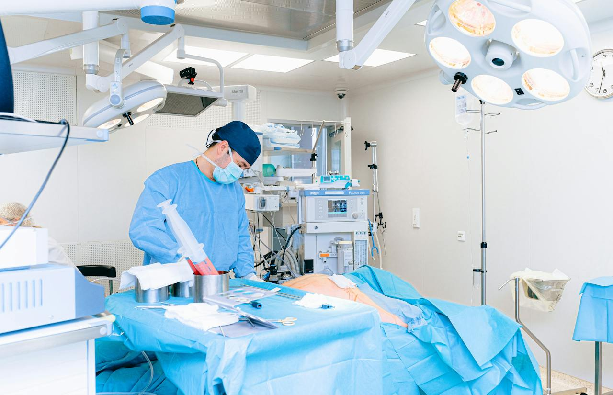

{{ template "head" . }}

<body class="w-full h-screen flex items-center justify-center bg-d">
  <div class="w-full aspect-[16/10] flex items-center justify-between gap-5 p-5 bg-f">
    <header
      class="w-20 h-full shrink-0 flex-col items-center justify-between gap-7 px-2 py-7 text-b text-3xl rounded-xl bg-w">
      <div class="w-full h-fit flex-col items-center justify-start gap-1.5">
        

        <span class="w-full aspect-square inline-flex items-center justify-center rounded-md hover:text-b hover:bg-b/20"
          hx-get="/home" hx-trigger="click" hx-target="#details" hx-swap="innerHtml">
          <i class="hgi hgi-stroke hgi-home-02"></i>
        </span>
        <span class="w-full aspect-square inline-flex items-center justify-center rounded-md hover:text-b hover:bg-b/20"
          hx-get="/calendar" hx-trigger="click" hx-target="#details" hx-swap="innerHtml">
          <i class="hgi hgi-stroke hgi-calendar-03"></i>
        </span>
        <span class="w-full aspect-square inline-flex items-center justify-center rounded-md hover:text-b hover:bg-b/20"
          hx-get="/doctors" hx-trigger="click" hx-target="#details" hx-swap="innerHtml">
          <i class="hgi hgi-stroke hgi-stethoscope"></i>
        </span>
        <span class="w-full aspect-square inline-flex items-center justify-center rounded-md hover:text-b hover:bg-b/20"
          hx-get="/healthcenters" hx-trigger="click" hx-target="#details" hx-swap="innerHtml">
          <i class="hgi hgi-stroke hgi-hospital-02"></i>
        </span>
        <span class="w-full aspect-square inline-flex items-center justify-center rounded-md hover:text-b hover:bg-b/20"
          hx-get="/records" hx-trigger="click" hx-target="#details" hx-swap="innerHtml">
          <i class="hgi hgi-stroke hgi-notebook-02"></i>
        </span>
      </div>

      <div class="w-full h-fit flex-col items-center justify-end gap-2.5">
        <span class="w-full aspect-square inline-flex items-center justify-center rounded-md hover:text-b hover:bg-b/20"
          hx-get="/chat" hx-trigger="click" hx-target="#details" hx-swap="innerHtml">
          <i class="hgi hgi-stroke hgi-message-question"></i>
        </span>
        <span class="w-full aspect-square inline-flex items-center justify-center rounded-md hover:text-b hover:bg-b/20"
          hx-get="/logout" hx-trigger="click" hx-swap="innerHtml">
          <i class="hgi hgi-stroke hgi-logout-03 rotate-180"></i>
        </span>
      </div>
    </header>

    <div id="dashboard" class="w-full h-full flex-col items-center justify-start gap-5 p-0">
      <nav class="w-full flex items-center justify-between">
        <h1 class="text-3xl text-start text-d font-bold">Doc_Apoi</h1>
        <div class="w-fit items-center justify-end gap-5">
          <input id="search" type="search"
            class="w-fit h-12 min-w-80 text-start text-lg font-medium px-5 py-2.5 rounded-xl border border-d/15 bg-w">
          <span
            class="h-12 aspect-square flex items-center justify-center text-3xl text-b rounded-xl bg-w hover:bg-b/20">
            <i class="hgi hgi-stroke hgi-notification-square"></i>
          </span>
          <span
            class="h-12 aspect-square flex items-center justify-center text-3xl text-b rounded-xl bg-w hover:bg-b/20">
            <i class="hgi hgi-stroke hgi-account-setting-03"></i>
          </span>
          <div class="h-12 items-center justify-center gap-2.5 px-1.5 rounded-xl bg-w">
            
            <div class="flex-col gap-0">
              <p id="name" class="text-d font-medium">Katungi Yassin</p>
              <span id="role" class="text-xs">Otolaryngologist</span>
            </div>
          </div>
        </div>
      </nav>

      <div class="w-full h-full flex-col items-start justify-start gap-3">
        <div class="w-full flex-col items-center justify-start gap-3">
          <div class="w-full items-end justify-between">
            <h2 class="text-2xl text-d font-bold">Speciality</h2>
            <div class="items-end justify-end gap-5">
              <span class="text-3xl text-b/55 hgi hgi-stroke hgi-arrow-left-04"></span>
              <span class="text-3xl text-b hgi hgi-stroke hgi-arrow-right-04"></span>
            </div>
          </div>
          <div class="filters w-full items-start justify-between gap-5 overflow-hidden">
            <div id="by-skill" class="w-full items-center justify-start gap-3.5 py-0.5 overflow-x-scroll">
              <button data-filter="all"
                class="text-base text-b font-medium shrink-0 px-3.5 py-2 rounded-3xl border-2 border-b bg-w hover:opacity-75">All</button>
              <button data-filter=".allergist"
                class="text-base text-b font-medium shrink-0 flex items-center justify-center gap-3 px-3.5 py-2 rounded-3xl border-2 border-b bg-w hover:opacity-75">
                
                <span class="inline-block">Allergy</span>
              </button>
              <button data-filter=".anesthesiologist"
                class="text-base text-b font-medium shrink-0 flex items-center justify-center gap-3 px-3.5 py-2 rounded-3xl border-2 border-b bg-w hover:opacity-75">
                
                <span class="inline-block">Anesthesiology</span>
              </button>
              <button data-filter=".audiologist"
                class="text-base text-b font-medium shrink-0 flex items-center justify-center gap-3 px-3.5 py-2 rounded-3xl border-2 border-b bg-w hover:opacity-75">
                
                <span class="inline-block">Audiology</span>
              </button>
              <button data-filter=".cardiologist"
                class="text-base text-b font-medium shrink-0 flex items-center justify-center gap-3 px-3.5 py-2 rounded-3xl border-2 border-b bg-w hover:opacity-75">
                
                <span class="inline-block">Cardiology</span>
              </button>
              <button data-filter=".dentist"
                class="text-base text-b font-medium shrink-0 flex items-center justify-center gap-3 px-3.5 py-2 rounded-3xl border-2 border-b bg-w hover:opacity-75">
                
                <span class="inline-block">Dentistry</span>
              </button>
              <button data-filter=".dermatologist"
                class="text-base text-b font-medium shrink-0 flex items-center justify-center gap-3 px-3.5 py-2 rounded-3xl border-2 border-b bg-w hover:opacity-75">
                
                <span class="inline-block">Dermatology</span>
              </button>
              <button data-filter=".gastroenterologist"
                class="text-base text-b font-medium shrink-0 flex items-center justify-center gap-3 px-3.5 py-2 rounded-3xl border-2 border-b bg-w hover:opacity-75">
                
                <span class="inline-block">Gastroenterology</span>
              </button>
              <button data-filter=".geriatrician"
                class="text-base text-b font-medium shrink-0 flex items-center justify-center gap-3 px-3.5 py-2 rounded-3xl border-2 border-b bg-w hover:opacity-75">
                
                <span class="inline-block">Geriatrics</span>
              </button>
              <button data-filter=".gynecologist"
                class="text-base text-b font-medium shrink-0 flex items-center justify-center gap-3 px-3.5 py-2 rounded-3xl border-2 border-b bg-w hover:opacity-75">
                
                <span class="inline-block">Gynecology</span>
              </button>
              <button data-filter=".nephrologist"
                class="text-base text-b font-medium shrink-0 flex items-center justify-center gap-3 px-3.5 py-2 rounded-3xl border-2 border-b bg-w hover:opacity-75">
                
                <span class="inline-block">Nephrology</span>
              </button>
              <button data-filter=".neurologist"
                class="text-base text-b font-medium shrink-0 flex items-center justify-center gap-3 px-3.5 py-2 rounded-3xl border-2 border-b bg-w hover:opacity-75">
                
                <span class="inline-block">Neurology</span>
              </button>
              <button data-filter=".nutritionist"
                class="text-base text-b font-medium shrink-0 flex items-center justify-center gap-3 px-3.5 py-2 rounded-3xl border-2 border-b bg-w hover:opacity-75">
                
                <span class="inline-block">Nutrition</span>
              </button>
              <button data-filter=".oncologist"
                class="text-base text-b font-medium shrink-0 flex items-center justify-center gap-3 px-3.5 py-2 rounded-3xl border-2 border-b bg-w hover:opacity-75">
                
                <span class="inline-block">Oncology</span>
              </button>
              <button data-filter=".opthalmologist"
                class="text-base text-b font-medium shrink-0 flex items-center justify-center gap-3 px-3.5 py-2 rounded-3xl border-2 border-b bg-w hover:opacity-75">
                
                <span class="inline-block">Opthalmology</span>
              </button>
              <button data-filter=".orthodontist"
                class="text-base text-b font-medium shrink-0 flex items-center justify-center gap-3 px-3.5 py-2 rounded-3xl border-2 border-b bg-w hover:opacity-75">
                
                <span class="inline-block">Orthodontics</span>
              </button>
              <button data-filter=".orthopedist"
                class="text-base text-b font-medium shrink-0 flex items-center justify-center gap-3 px-3.5 py-2 rounded-3xl border-2 border-b bg-w hover:opacity-75">
                
                <span class="inline-block">Orthopedics</span>
              </button>
              <button data-filter=".otolaryngologist"
                class="text-base text-b font-medium shrink-0 flex items-center justify-center gap-3 px-3.5 py-2 rounded-3xl border-2 border-b bg-w hover:opacity-75">
                
                <span class="inline-block">Otolaryngology</span>
              </button>
              <button data-filter=".pathologist"
                class="text-base text-b font-medium shrink-0 flex items-center justify-center gap-3 px-3.5 py-2 rounded-3xl border-2 border-b bg-w hover:opacity-75">
                
                <span class="inline-block">Pathology</span>
              </button>
              <button data-filter=".pediatrician"
                class="text-base text-b font-medium shrink-0 flex items-center justify-center gap-3 px-3.5 py-2 rounded-3xl border-2 border-b bg-w hover:opacity-75">
                
                <span class="inline-block">Pediatrics</span>
              </button>
              <button data-filter=".pharmacist"
                class="text-base text-b font-medium shrink-0 flex items-center justify-center gap-3 px-3.5 py-2 rounded-3xl border-2 border-b bg-w hover:opacity-75">
                
                <span class="inline-block">Pharmacy</span>
              </button>
              <button data-filter=".psychiatrist"
                class="text-base text-b font-medium shrink-0 flex items-center justify-center gap-3 px-3.5 py-2 rounded-3xl border-2 border-b bg-w hover:opacity-75">
                
                <span class="inline-block">Psychiatry</span>
              </button>
              <button data-filter=".pulmonologist"
                class="text-base text-b font-medium shrink-0 flex items-center justify-center gap-3 px-3.5 py-2 rounded-3xl border-2 border-b bg-w hover:opacity-75">
                
                <span class="inline-block">Pulmonology</span>
              </button>
              <button data-filter=".radiologist"
                class="text-base text-b font-medium shrink-0 flex items-center justify-center gap-3 px-3.5 py-2 rounded-3xl border-2 border-b bg-w hover:opacity-75">
                
                <span class="inline-block">Radiology</span>
              </button>
              <button data-filter=".rheumatologist"
                class="text-base text-b font-medium shrink-0 flex items-center justify-center gap-3 px-3.5 py-2 rounded-3xl border-2 border-b bg-w hover:opacity-75">
                
                <span class="inline-block">Rheumatology</span>
              </button>
              <button data-filter=".urologist"
                class="text-base text-b font-medium shrink-0 flex items-center justify-center gap-3 px-3.5 py-2 rounded-3xl border-2 border-b bg-w hover:opacity-75">
                
                <span class="inline-block">Urology</span>
              </button>
            </div>

            <!-- <div class="by-experience w-full items-center justify-end gap-3.5"> -->
            <!-- </div> -->
          </div>
        </div>

        <div class="w-full h-full min-h-[67%] items-start justify-start gap-5">
          <div id="doctors"
            class="w-[30%] h-full flex-col gap-5 items-center justify-start p-3.5 rounded-2xl overflow-y-scroll bg-w">
            <div
              class="otolaryngologist w-full aspect-[4/2.5] flex-col items-center justify-between gap-1.5 p-3 rounded-xl border-2 border-t/20 hover:border-b/70">
              <div class="w-full items-center justify-start gap-2.5">
                
                <div class="w-full flex-col items-start justify-between py-1.5">
                  <p class="doc-name text-base text-d font-medium">Katungi Yassin</p>
                  <snap class="doc-speciality text-t/75 text-xs flex items-center justify-start gap-x-1.5">
                    Otolaryngologist
                    <snap class="inline-block w-1.5 aspect-square rounded-3xl bg-t/65"></snap> <span
                      class="doc-experience">5</span> years exp...
                  </snap>
                </div>
              </div>
              <div class="w-full flex-col items-start justify-start gap-2.5">
                <p class="text-d text-base font-medium capitalize">Available Today</p>
                <ul class="w-full flex flex-col">
                  <li class="text-xs text-t list-item list-inside list-disc">Online Consultations</li>
                  <li class="text-xs text-t list-item list-inside list-disc">Offline at Poimedic Hospital, Kampala.</li>
                </ul>
              </div>
              <div class="w-full items-end justify-between border-t-2 border-t/25 pt-1.5">
                <p class="text-t text-xs capitalize">Consultation Fee</p>
                <p class="text-d text-sm font-bold capitalize"><span class="font-medium opacity-45">Ugx</span>35,000 -
                  150,000</p>
              </div>
            </div>
          </div>

          <div class="w-full h-full flex-col gap-5 items-center justify-start p-3.5 rounded-2xl bg-w">
          </div>
        </div>
      </div>
    </div>
  </div>

  <script>
    var containerEl = document.querySelector('#doctors');
    var mixer = mixitup(containerEl, {
      animation: {
        effects: 'fade scale(0.85)',
        duration: 400
      }
    });
  </script>
</body>

</html>
